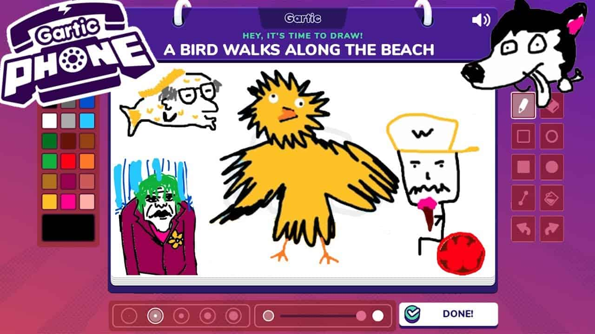

Game Modes
Gartic Phone features eleven game modes with varying levels of interest and participation required. So, if you and your friends are looking to up the ante of this mysterious word, you can play the ‘Secret’ mode (arguably the best game mode).  There are also ‘No Rush’ and ‘Speedrun’ modes for players looking to take their time with drawings (without a time limit)and create a masterpiece, or looking to create the most illustrative images within a short span of time in fewer turns. The different variations are all equally fun and offer a great time.
- 1. Normal: The basis of Gartic Phone, where you write and draw alternately until you reach the end of the round.
- 2. Knock-Off: Replicate drawings while the clock gets faster.
- 3. Secret: Your creations are hidden during the game.
- 4. Animation: Create animations in collaboration with others.
- 5. Icebreaker: As the name suggests, you can ask questions and have fun with drawings.
- 6. Complement: You start with basic lines and see the other players’ interpretation.
- 7. Score: Attempt to gain the highest score.
- 8. Speedrun: The clock becomes your enemy in this game mode.
- 9. Sandwich: Here, you start writing and drawing until the end.
- 10. Crowd: Played with 15 or more players.
- 11. Background: Create a fixed background for your animations.
- 12. Solo: Make animations in just five frames.